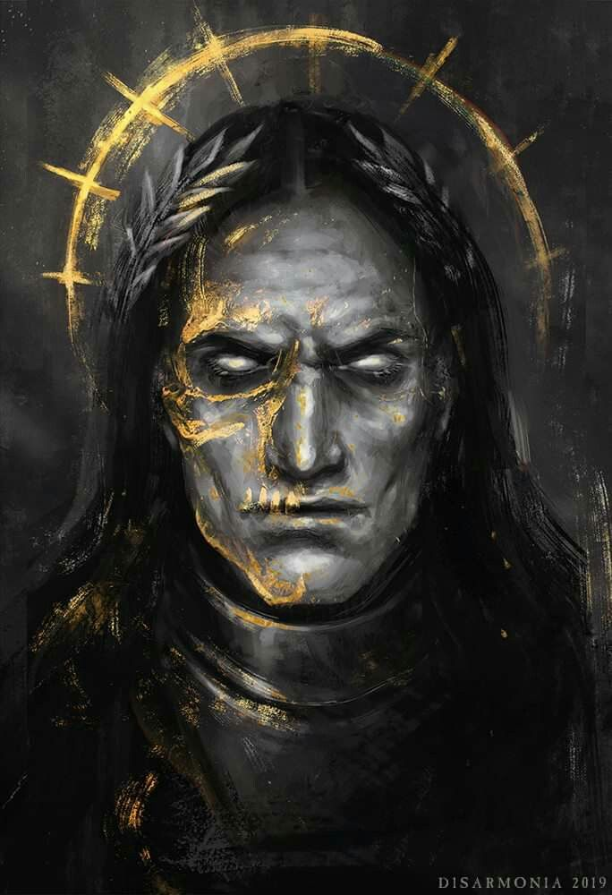

|  | EmperorEmperor of man The Emperor of Mankind, often referred to by His faithful as the "God-Emperor," the "Master of Mankind," or simply "the Emperor," is the immortal Perpetual and psyker who serves as the reigning monarch of the Imperium of Man, and is described by the Imperial Ecclesiarchy and the Imperial Cult as the Father, Guardian and God of Humanity. |
|
|